首頁
加權指數、三大法人、今日突破、此刻發生
把市場想成天秤。交易只是在判斷天秤現在倒向哪一邊。
易中生Snsheng雙極交易法
1.0
大盤、法人、今日突破，一打開就在首頁。畫一段走勢，找出走得像的股票；每天的突破和勝率都留紀錄。
打開 OX 台股›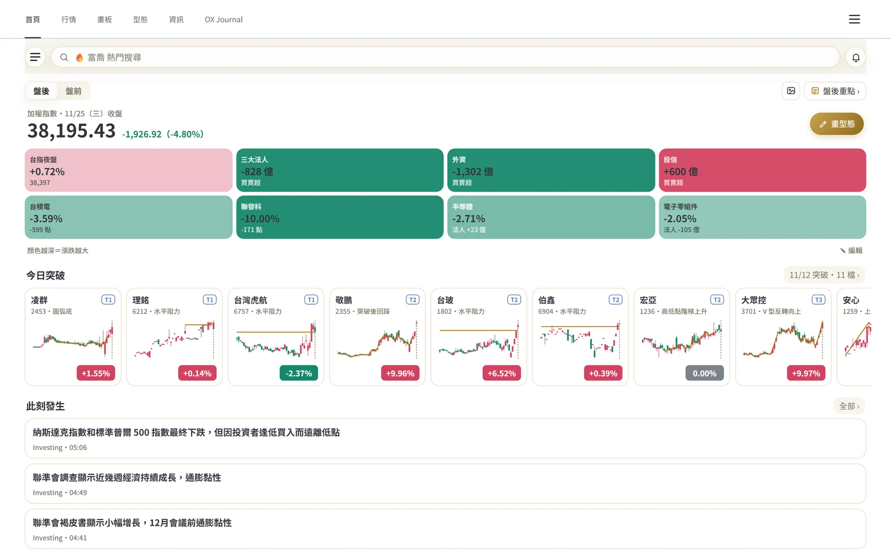
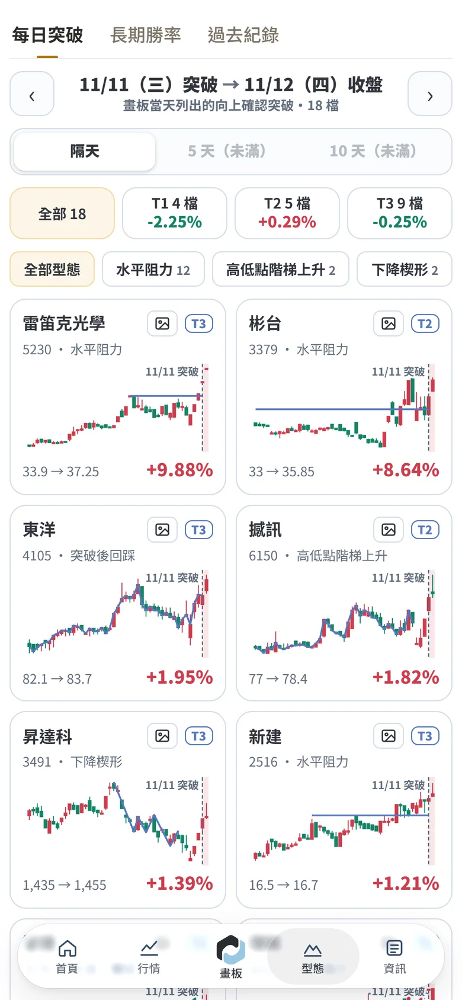
加權指數、三大法人、今日突破、此刻發生
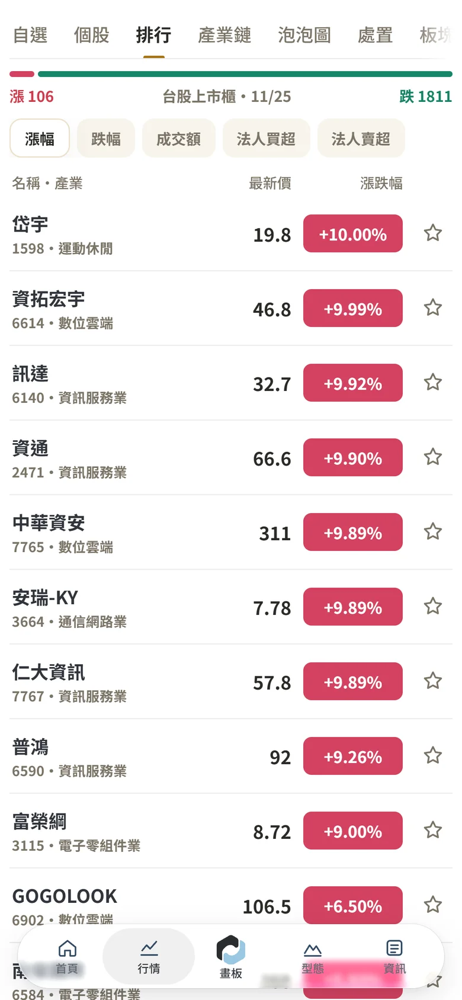
排行、產業鏈、泡泡圖、板塊輪動、ETF、籌碼股
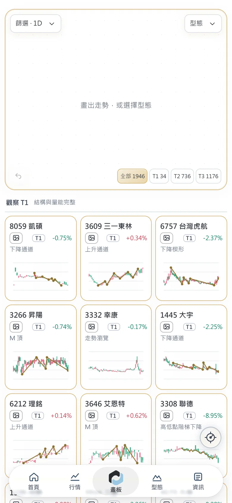
畫出走勢或選一個型態，找出相近的股票
每日突破、長期勝率、過去紀錄
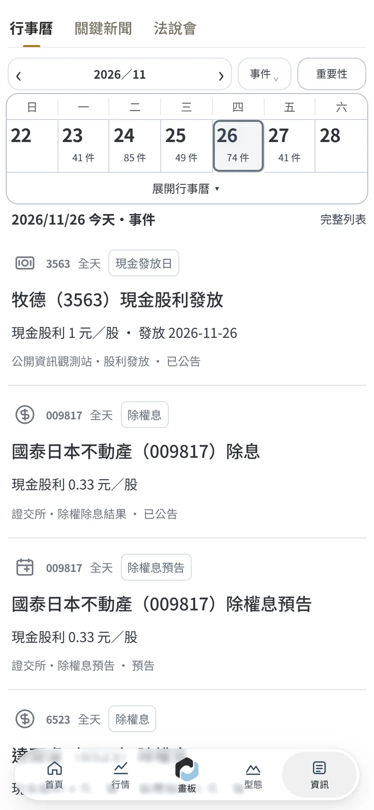
行事曆、關鍵新聞、法說會
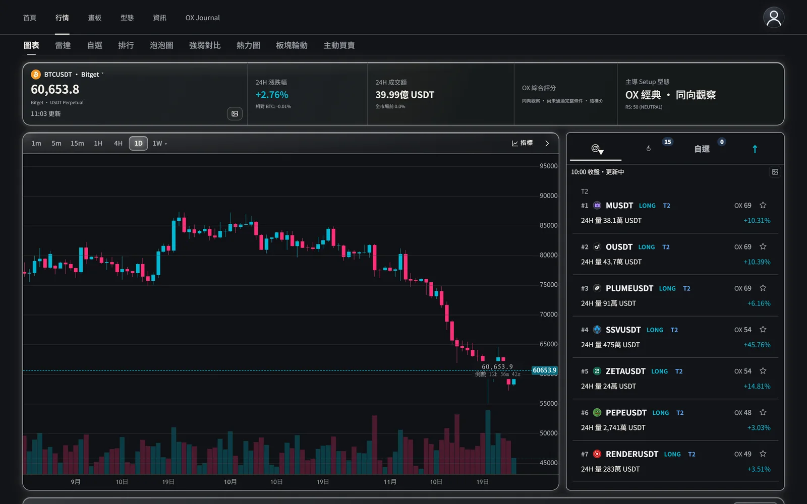
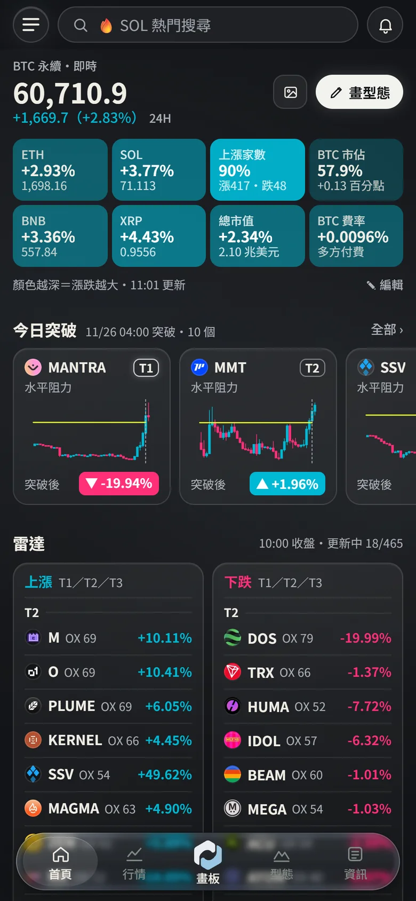
BTC、ETH、上漲家數、今日突破、雷達
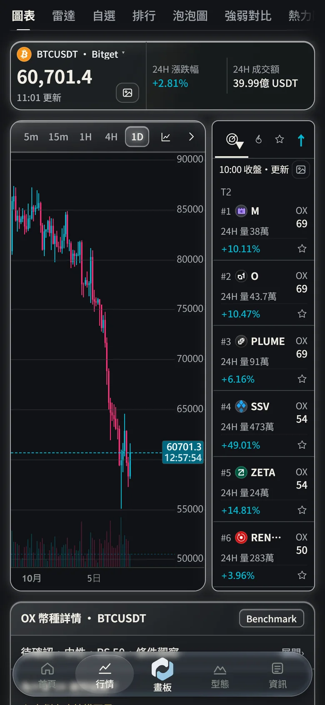
K 線、排行、泡泡圖、強弱對比、熱力圖、主動買賣
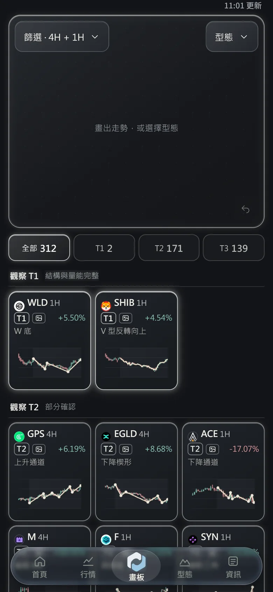
畫出走勢或選一個型態，找出相近的幣
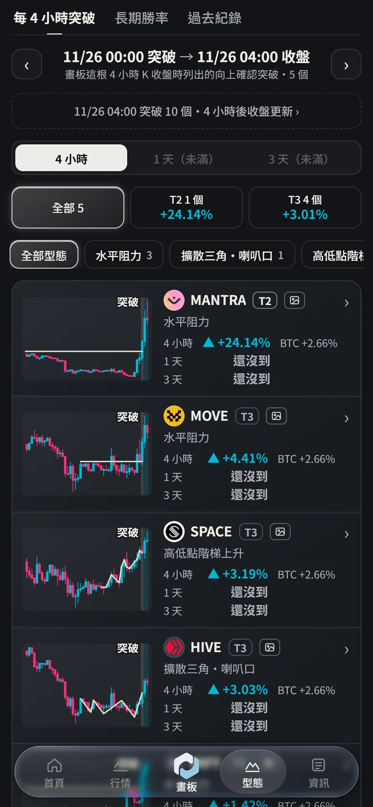
每 4 小時突破、長期勝率、過去紀錄
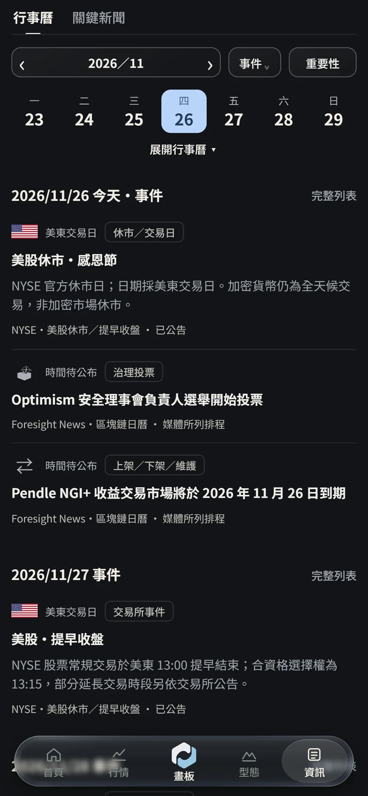
行事曆、關鍵新聞
3.0 · BLUEPRINT
九家交易所的資金放在同一個畫面看。
打到止損最多虧多少，數量自動算。
每張單的止盈止損都看得到，可以直接改。
選一家你習慣的交易所，整個 App 會變成那一家的樣子。
價格跟真實市場同步，資金自己生成，也能回到過去任何一天練習。

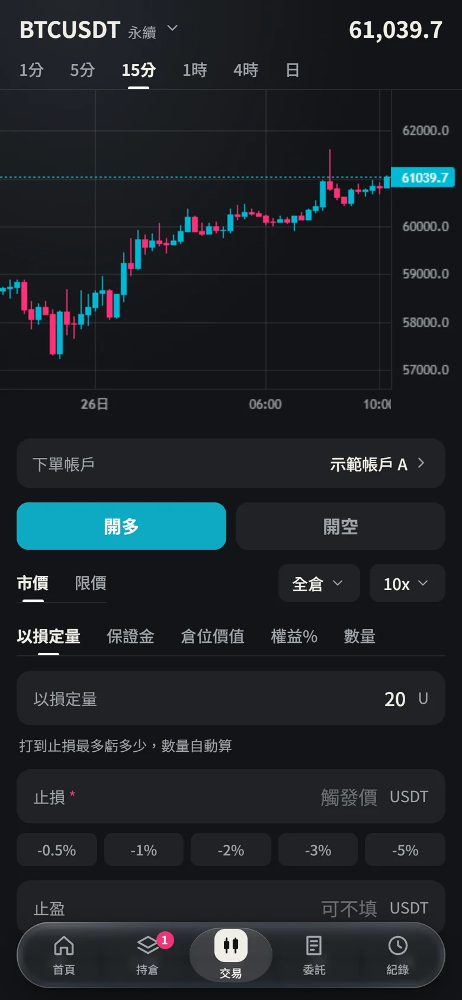

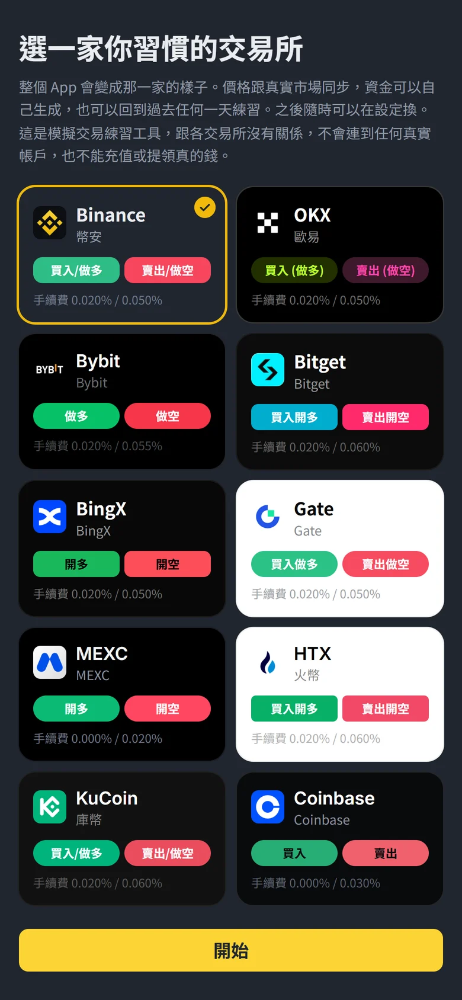

交易法
每一套都有人在教，每一句都是他們自己講過的話。
易中生Snsheng
選擇不做什麼，比做什麼重要。
阿聖聊交易・老承
簡單來說流動性就是止損訂單的意思阿聖
先看結構，後做方向老承
阿聖聊交易
它更像是一種觀察與輔助判斷市場結構的工具
易中生Snsheng
突破和跌破都一樣，影線碰到就算。
Bitget 或 BingX，用你看的那位老師的連結開新帳號。
在交易所完成身分認證。
入金減掉出金，要有 100 以上。
常見問題
點上面的按鈕，用瀏覽器打開就好，手機電腦都可以。
用老師的連結註冊 Bitget 或 BingX、完成 KYC、淨入金滿 100 USDT，再到會員頁填 UID。
進階教材和 OX 加密進階功能。
我們到交易所後台核對，審核完 24 小時內用 LINE 把進階教材傳給你。
先不要自己再開一個。兩家交易所都規定一個人只能有一個帳號，同一張證件也只能認證一次，重開會卡在身分認證。先到 LINE 官方跟我們說是哪一家、舊帳號有沒有入過金，我們再告訴你怎麼做。
入金減掉出金，滿 100 USDT。
OX Trading